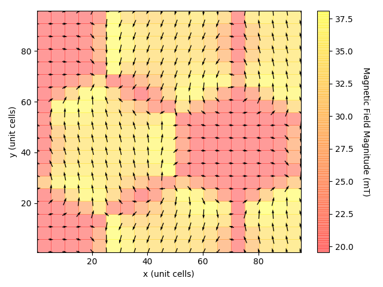

Usage¶
Units¶
The inputs and outputs of the module use units as tabulated:
| Quantity | Units |
|---|---|
| Magnetic moment | Bohr magnetons |
| Magnetic structure wavelengths | Unit cells |
| Magnetic fields | Teslas |
| Muon positions | Fractional units (of unit cells) |
| Size and resolution of grid of unit cells | Unit cells |
| Lorentz sphere radius | Unit cells |
Defining the Magnetic Structure¶
There are currently four magnetic textures that may be defined. These are:
- Ferromagnetic alignment
- Antiferromagnetic alignment
- A single-wavevector helical spin configuration, as described by T. Lancaster et. al. [1]
- A triple-wavevector skyrmion-like spin configuration, as described by T. Lancaster et. al. [1]
Note that, for the last two methods for which the user does not define the magnetic moment on each atom explicitly, the magnitude of the magnetic moment on each dipole is 0.25 Bohr magnetons.
The initialisation of the magnetic structure depends on the arguments passed to its constructor. To define a ferromagnetically-aligned structure with spins parallel to the y-direction, one would run:
import MuDip
import numpy as np
fourierComponent = np.array([0, 1, 0]) # Magnitude of one Bohr magneton
momentField = MuDip.MomentField(fourierComponent)
For an antiferromagnetically-aligned structure for which the propagation is along the x-axis with a wavelength of 10 unit cells, and the spins are aligned parallel to the y-axis, one would run:
import MuDip
import numpy as np
propagationVector = np.array([1, 0, 0]) # Direction only; the program normalises it anyway
wavelength = 10
fourierComponent = np.array([0, 1, 0])
momentField = MuDip.MomentField(propagationVector, wavelength, fourierComponent)
For the single-wavevector helical spin configuration, with a wavelength of 70 unit cells, one would run:
import MuDip
wavelength = 70
momentField = MuDip.MomentField(wavelength, "singleK")
Similarly, for the triple-wavevector skyrmion-like spin configuration, with a skyrmion wavelength of 70 unit cells, one would run:
import MuDip
wavelength = 70
momentField = MuDip.MomentField(wavelength, "tripleK")
Defining the Crystal Structure¶
Currently, the only crystal structure defined in MuDip is the Cu2OSeO3 crystal, which consists of 16 copper ions per (non-primitive) unit cell, four of which have their moment flipped with respect to the general magnetic moment structure. To define the crystal, a MomentField object is passed to the crystal as an argument, as in the following code:
import MuDip
crystal = MuDip.Cu2OSeO3(momentField)
Obtaining the Magnetic Field at an Arbitrary Point within the Crystal¶
To obtain the field due to the dipoles within a Lorentz sphere of radius 20 unit cells as a numpy array of the form [B_x, B_y, B_z], where B_i is the dipole magnetic field along the i-axis at position x = 3.4, y = 9.2, z = 10.1, where length units are specified in terms of unit cells, we would run the code:
Bdip = crystal.getDipoleField(3.4, 9.2, 10.1, 20)
Similarly, for the Lorentz field:
Blor = crystal.getLorentzField(3.4, 9.2, 10.1, 20)
And for the total (dipolar + Lorentz) field:
Btot = crystal.getTotalField(3.4, 9.2, 10.1, 20)
Plotting the Magnetic Field within the Sample¶
MuDip makes it relatively easy to obtain the projection of the magnetic field structure onto an arbitrary plane along the z-axis. After having defined the magnetic and crystal structures as previously described, we can create a VectorFieldCreator object.
muonPositions = np.array([[0.215, 0.700, 0.970]])
startCell = 0
endCell = 100
resolution = 5
radius = 2
Bapplied = np.array([0, 0, 10e-3])
z = 0
vectorFieldCreator = MuDip.VectorFieldCreator(momentField, crystal, muonPositions, startCell, endCell, resolution,
radius, Bapplied, z)
This will create a 100x100 grid of unit cells, where the magnetic field is sampled at a position of (0.215, 0.70, 0.970) within each unit cell (in fractional coordinates), every five cells along each axis, using a Lorentz sphere with a radius of 2 unit cells, and a field is applied along the z-direction of 1 mT. The we obtain the field’s projection in the z = 0 plane.
We can then obtain an array of the form [[x1, x2, …], [y1, y1, …], [B_x1, B_x2, …], [B_y1, B_y2, …]] by calling:
Barray = vectorFieldCreator.outputBField()
Where each component of the B-field is the total B-field (i.e. dipolar + Lorentz). We must process the output slightly in order to obtain a quiver plot. We first split the output into separate arrays:
from matplotlib import pyplot as plt
xValues = Barray[0] # [x1, x2, x3, ...]
yValues = Barray[1]
fieldXArray = Barray[2] # [B_x1, B_x2, B_x3, ...]
fieldYArray = Barray[3]
For ease-of-interpretation of the quiver plot, it is useful to normalise the B-field vectors:
fieldXArrayNormalised = np.zeros_like(fieldXArray)
fieldYArrayNormalised = np.zeros_like(fieldYArray)
for i in range(int(np.sqrt(len(xValues)))): # The i in range of side length of grid (divided appropriately by the resolution)
magnitude = np.sqrt(fieldXArray[i]**2 + fieldYArray[i]**2)
fieldXArrayNormalised[i] = fieldXArray[i] / magnitude
fieldYArrayNormalised[i] = fieldYArray[i] / magnitude
We can then make the plot:
plt.quiver(xValues, yValues, fieldXArray, fieldYArray, pivot="middle")
plt.xlabel("x (unit cells)")
plt.ylabel("y (unit cells)")
plt.show()
Which, for the triple-wavevector skyrmion-like state desribed earlier, will look like:
It is also possible to obtain a heatmap of the magnitude of the magnetic field, albeit with a little more effort. We first create an array to store the magnitudes, and reshape it into a 2D array:
magnitudeMap = np.sqrt(fieldXArray**2 + fieldYArray**2)
magnitudeMap = np.reshape(magnitudeMap, (int(np.sqrt(len(magnitudeMap) * len(muonPositions))), int(np.sqrt(len(magnitudeMap) * len(muonPositions)))))
Then define arrays that ensure the colour map is scaled correctly along the axes:
colourXValues = np.reshape(xValues, (int(np.sqrt(len(xValues))), int(np.sqrt(len(xValues)))))
colourYValues = np.reshape(yValues, (int(np.sqrt(len(yValues))), int(np.sqrt(len(yValues)))))
Finally, we can plot this:
fig, ax = plt.subplots(1)
cMesh = ax.pcolor(colourXValues, colourYValues, magnitudeMap * 1000, alpha=0.4, cmap=plt.get_cmap("autumn"))
cbar = plt.colorbar(cMesh)
cbar.set_label("Magnetic Field Magnitude (mT)", rotation=270, labelpad=20)
plt.show()
When this is overlayed on the previous quiver plot, the result looks like:
We can also visualise the positions of the atoms, and the magnetic moments. As an example, we take a ferromagnetic arrangement of the magnetic moments aligned parallel to the y-axis. To visualise a 2x2 grid of such moments projected into the z-plane, we run the following code:
muonPositions = np.array([[0.215, 0.700, 0.970]])
startCell = 0
endCell = 2
resolution = 1 # This doesn't have any effect on the magnetic moment distribution but is required anyway to initialise VectorFieldCreator
radius = 2
Bapplied = np.array([0, 0, 10e-3])
z = 0
vectorFieldCreator = MuDip.VectorFieldCreator(momentField, crystal, muonPositions, startCell, endCell, resolution,
radius, Bapplied, z)
Mfield = vectorFieldCreator.outputMField()
xValues = Mfield[0]
yValues = Mfield[1]
fieldXArray = Mfield[2]
fieldYArray = Mfield[3]
plt.quiver(xValues, yValues, fieldXArray, fieldYArray, pivot="middle")
plt.xlabel("x (unit cells)")
plt.ylabel("y (unit cells)")
plt.show()
Which produces the following plot:
Note that four moments within each cell are flipped with respect to the general patten, as described earlier.
Obtaining Magnetic Field Spectra¶
The SpectrumCreator class allows us to sample the magnetic field magnitude at various points around the crystal. Currently, it arbitrarily samples the B-field component along the [1, 1, 1] axis. To obtain, for example, the list of the B-field components measured at two muon sites [0.215, 0.700, 0.970] and [0.035, 0.720, 0.805] (in fractional cell coordinates) for cells separated by five unit cells along each axis in a sphere running from 0 to 70 unit cells, with a Lorentz sphere radius of 2 unit cells, and an applied B-field of 10 mT along the z-axis, we would run the code:
import MuDip
momentField = MuDipMomentField(70, "tripleK")
crystal = MuDip.Cu2OSeO3(momentField)
muonPositions = np.array([[0.215, 0.700, 0.970], [0.035, 0.720, 0.805]])
startCell = 0
endCell = 70
resolution = 5
radius = 2
Bapplied = np.array([0, 0, 10e-3])
spectrumCreator = MuDip.SpectrumCreator(momentField, crystal, muonPositions, startCell, endCell, resolution, radius, Bapplied)
spectrum = spectrumCreator.outputSpectrum()
From this, we can plot the frequency spectrum of various magnetic field strengths:
from matplotlib import pyplot as plt
plt.hist(spectrum * 1000, bins=100)
plt.xlabel("B (mT)")
plt.ylabel("Spectral Intensity (AU)")
plt.show()
Which looks like:
References¶
| [1] | (1, 2) Lancaster, T., Williams, R. C., Thomas, I. O., Xiao, F., Pratt, F. L., Blundell, S. J., Loudon, J. C., Hesjedal, T., Clark, S. J., Hatton, P. D., Ciomaga Hatnean, M., Keeble, D. S. & Balakrishnan, G. (2015). Transverse field muon-spin rotation signature of the skyrmion-lattice phase in Cu2OSeO3. Phys. Rev. B, 91, 224408. |